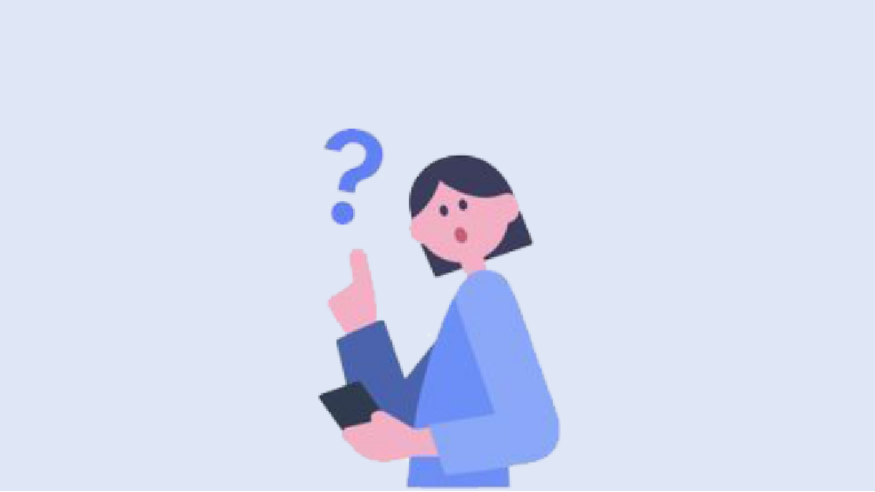

데일리퀴즈
전체메뉴Quiz
보험료 납입면제 상품의 경우 해당 사유가 발생할 때 보장보험료 납입이 면제된다.

정답은 그렇다 입니다.
다음 퀴즈에 도전해보세요!
다음 퀴즈에 도전해보세요!
찬물로 머리를 감으면 두피의 모공이 수축하면서 자극을 덜 받게 됩니다. 미지근한 물로 먼지를 씻어내고 이후 헹굴 때 찬물로 씻어 내는 것이 좋습니다. 찬물로 머리를 감으면 두피의 모공이 수축하면서 자극을 덜 받게 됩니다. 미지근한 물로 먼지를 씻어내고 이후 헹굴 때 찬물로 씻어 내는 것이 좋습니다.
정답은 그렇다 입니다.
보상으로 500P가 적립되었어요.
보상으로 500P가 적립되었어요.
찬물로 머리를 감으면 두피의 모공이 수축하면서 자극을 덜 받게 됩니다. 미지근한 물로 먼지를 씻어내고 이후 헹굴 때 찬물로 씻어 내는 것이 좋습니다. 찬물로 머리를 감으면 두피의 모공이 수축하면서 자극을 덜 받게 됩니다. 미지근한 물로 먼지를 씻어내고 이후 헹굴 때 찬물로 씻어 내는 것이 좋습니다.
아래 버튼을 통해 모의고사에 도전하시고
100만원을 받아가세요!